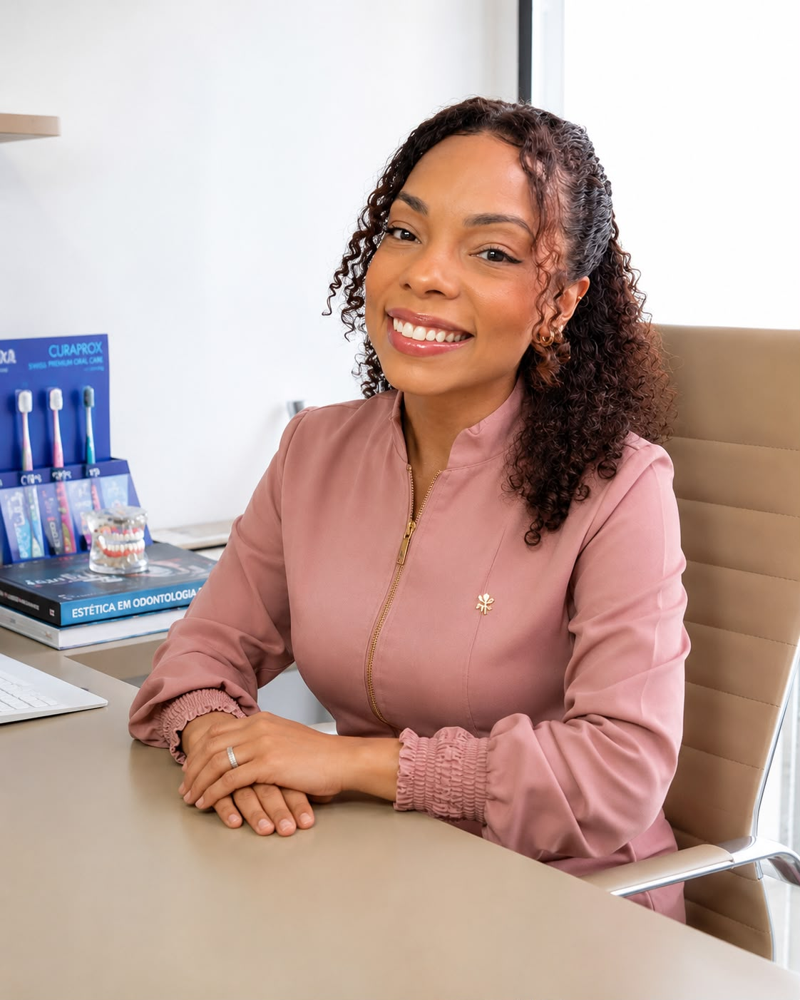
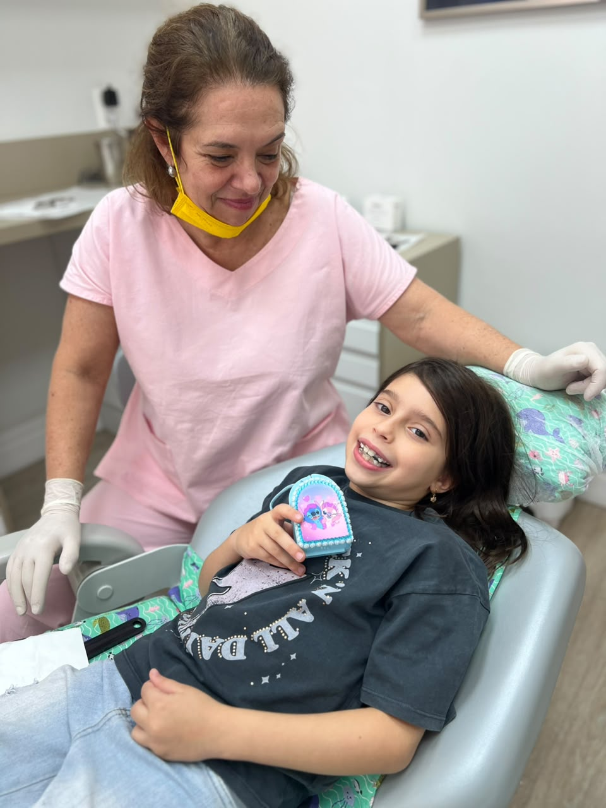
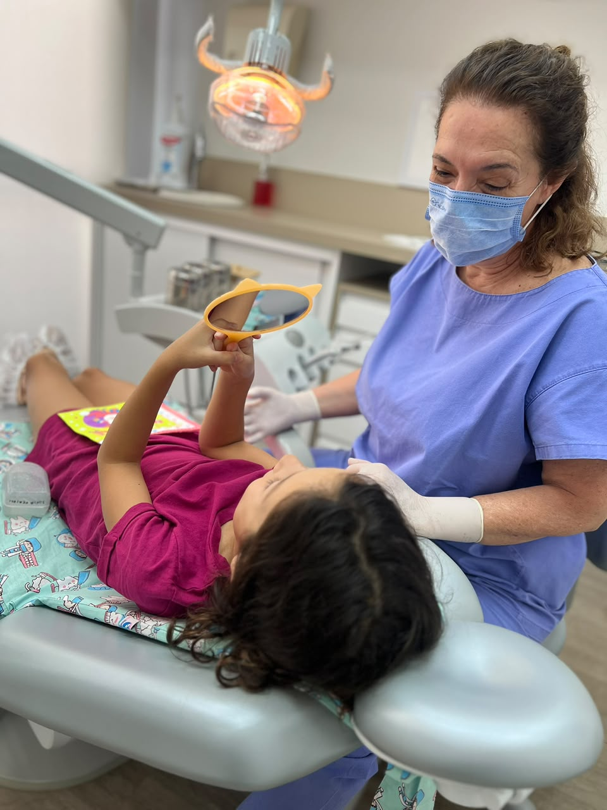
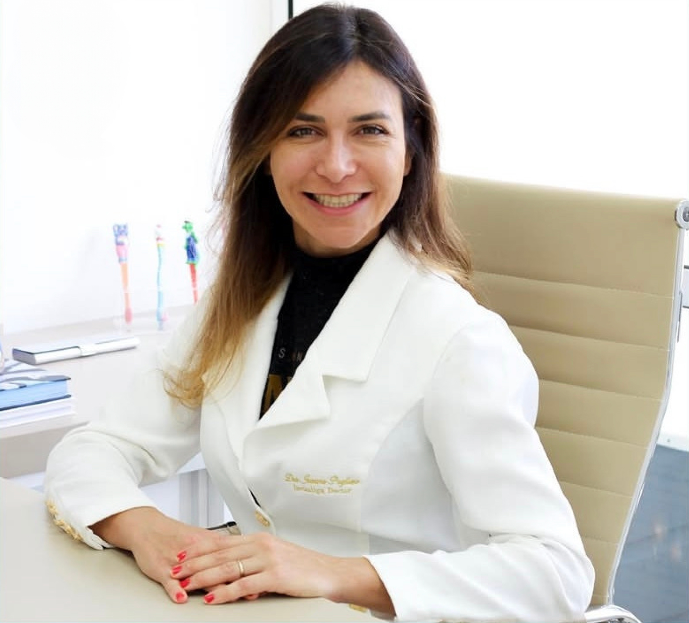
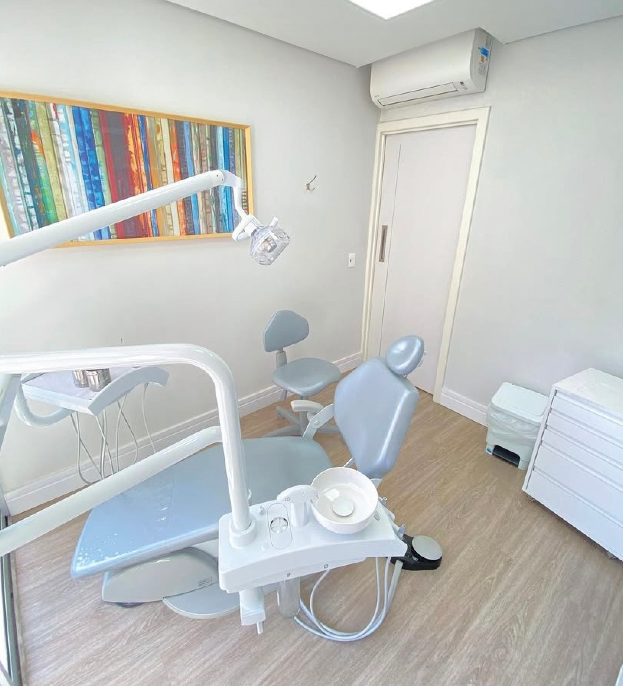
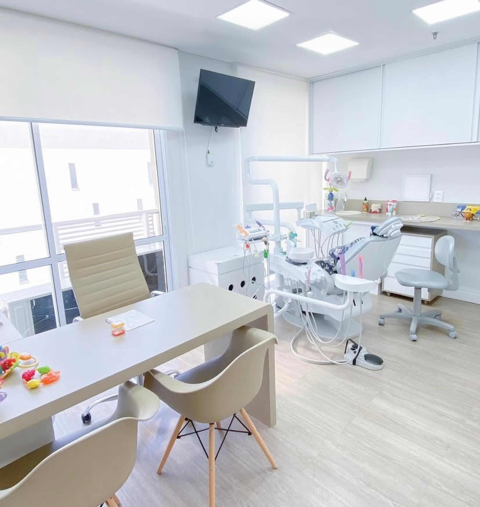
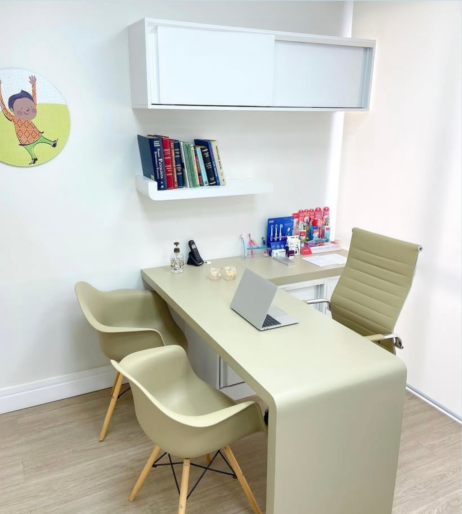
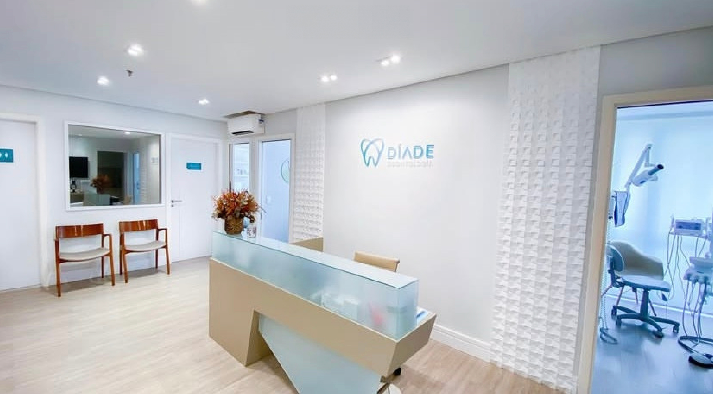
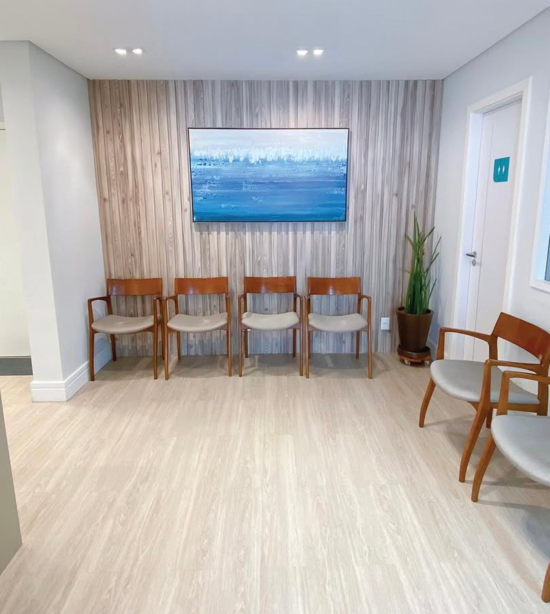
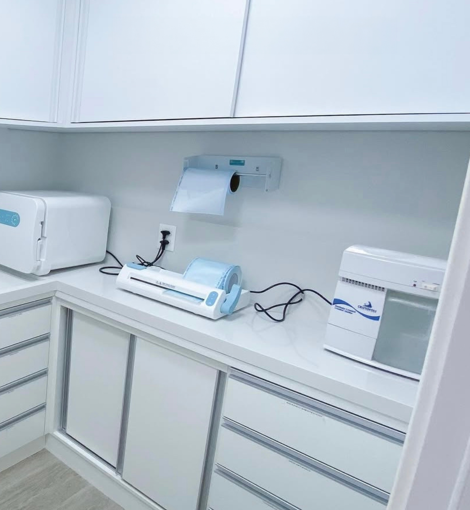

Dra. Daniela Hilário
Nossa especialista em Endodontia e Odontologia Estética, a Dra. Daniela Hilário tem vasta experiência em transformar sorrisos e é a responsável pelo time de profissionais da clínica.
A saúde bucal da criança começa com orientação, prevenção e uma experiência positiva desde os primeiros contatos com o dentista.
Na Díade Odontologia, o atendimento infantil é pensado para acolher a criança, orientar os responsáveis e acompanhar cada fase do crescimento com cuidado individualizado.
Agendar atendimento infantil pelo WhatsApp (11) 97396-1959
Muitos pais só procuram atendimento odontológico infantil quando a criança sente dor, apresenta cárie ou já tem algum incômodo aparente.
Mas a odontopediatria vai muito além de tratar problemas. Ela ajuda a prevenir alterações, acompanhar o desenvolvimento dos dentes, orientar hábitos em casa e tornar o cuidado com a saúde bucal mais natural para a criança.
Quanto mais cedo esse acompanhamento começa, mais fácil tende a ser construir uma relação positiva com o dentista.
Quero entender o melhor momento para levar meu filho ao dentistaO atendimento odontopediátrico pode ser indicado para crianças em diferentes fases, desde os primeiros dentinhos até a troca da dentição de leite pela permanente.
Cada criança tem uma necessidade diferente. Por isso, a avaliação individual é essencial para entender o momento, o comportamento, os hábitos e os cuidados mais adequados.

A dor de dente em crianças costuma gerar preocupação, choro, noites mal dormidas e insegurança para toda a família.
A prevenção ajuda os pais a não dependerem apenas de consultas de urgência. Com acompanhamento, é possível identificar sinais iniciais, orientar a rotina de higiene e cuidar da saúde bucal infantil com mais tranquilidade.
Na Díade Odontologia, o foco é oferecer um atendimento acolhedor, respeitando o tempo da criança e ajudando os responsáveis a tomarem decisões com mais segurança.
Falar com a equipe da DíadeA Díade Odontologia é uma clínica particular localizada na Vila Leopoldina, em São Paulo, com atendimento voltado para quem busca cuidado, confiança e acompanhamento profissional.
No atendimento infantil, isso significa olhar não apenas para o dente, mas para a criança, sua rotina, seus hábitos e o contexto familiar.
A proposta é que a criança se sinta mais segura no ambiente odontológico e que os pais tenham clareza sobre os cuidados necessários em cada etapa.
Uma jornada pensada para acolher a criança e orientar os pais.
Mesmo sendo temporários, os dentes de leite têm funções importantes. Eles participam da mastigação, da fala, da estética, da autoestima e ajudam a manter espaço para os dentes permanentes.
Por isso, o cuidado odontológico infantil pode envolver:
A forma como a criança vive suas primeiras consultas pode influenciar a relação dela com o dentista por muitos anos.
Quando o atendimento é acolhedor, educativo e respeita o tempo da criança, o cuidado odontológico tende a ser percebido com mais naturalidade.
Por isso, a consulta odontopediátrica não deve ser vista apenas como uma solução para dor ou cárie. Ela também é uma oportunidade para construir confiança, ensinar bons hábitos e tornar a prevenção parte da rotina da família.
Agendar a primeira consulta infantil
Nossa especialista em Endodontia e Odontologia Estética, a Dra. Daniela Hilário tem vasta experiência em transformar sorrisos e é a responsável pelo time de profissionais da clínica.

Com mais de 30 anos de experiência, a Dra. Cecília é especialista em Odontopediatria e Dentística.

Top Doctor Diamond Invisalign e credenciada no sistema de Aparelho Autoligado Damon, a Dra. Jussara atua na área de Ortodontia e Ortopedia funcional dos maxilares.
Eu e minha família preferimos a Díade para nosso cuidado com a saúde bucal e cuidados dentários. A Dr Daniela e sua cordialidade, paciência e carinho com os pacientes nos faz querer voltar sempre, fora que a estrutura e o atendimento desde a recepção e fora da curva, só tenho elogios para esse espaço que sempre foi o melhor consultório visitado pela minha família.
Atendimento excelente. Muito tato com criança, paciência e carinho. Meu filho que não tinha deixado nem olhar em outro lugar, fez até profilaxia. Excelente atendimento das dras Kimberly e dra Daniela. Além do excelente suporte e atendimento da Gabrieli na recepção e whatsapp.
Meus parabéns à Clínica Diade Odontologia e à profissional Daniela Hilário pelo profissionalismo e dedicação. Excelente trabalho!
Meus parabéns à Clínica Diade Odontologia e à profissional Daniela Hilário pelo profissionalismo e dedicação. Excelente trabalho!
Toda a minha família é atendida com muita excelência!! Muito bem localizada, consultório sempre muito limpo e muito bem equipado. As crianças também são muito bem atendidas. Recomendo a todos!!!
Conheça alguns espaços da Díade Odontologia pensados para tornar o atendimento infantil mais tranquilo, organizado e seguro desde a chegada até a consulta.






Av. Dr. Gastão Vidigal, 1132, Conjunto 408
Vila Leopoldina, São Paulo/SP
CEP 05314-000
Se você procura atendimento infantil com cuidado, prevenção e orientação clara para acompanhar a saúde bucal do seu filho, fale com a equipe da Díade Odontologia e agende uma consulta de odontopediatria.